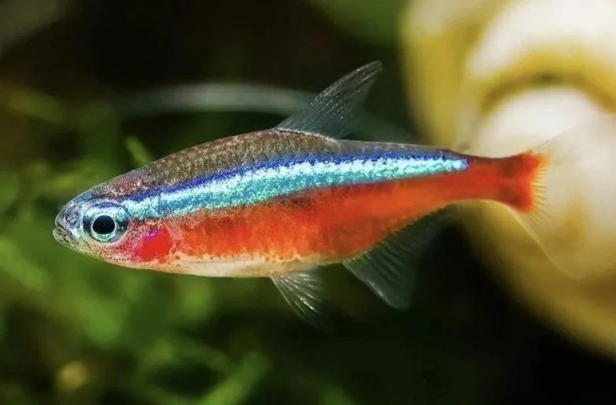

鱼类 · 动物界
宝莲灯鱼 Paracheirodon axelrodi

亚马逊黑水河的小型观赏脂鲤，体侧蓝带与红色区域几乎相接，色彩比红绿灯鱼更浓艳，被称为“灯鱼之王”。
- 分类
- 门脊索动物门纲辐鳍鱼纲目脂鲤目科脂鲤科属霓虹脂鲤属
- 栖息环境
- 亚马逊黑水区的缓流、水草茂密、富含腐殖质的水域
- 地理分布
- 南美洲内格罗河和奥里诺科河上游，主要在巴西和哥伦比亚
- 保护级别
- 暂无评估；中国未列入国家重点保护野生动物名录
物种志
宝莲灯鱼体形细长，侧扁，成鱼体长一般 4–5 cm。体侧有一条亮蓝色霓虹纵带，从眼睛延伸到尾柄，蓝带下方的腹部和尾部大面积呈鲜红色，红蓝两色几乎直接相接，对比强烈。背鳍和尾鳍透明，带有淡色斑纹。
宝莲灯鱼分布于南美洲亚马逊河流域，主要产于巴西内格罗河和奥里诺科河上游的黑水区，栖息在水流缓慢、水草茂密、水质偏酸且富含腐殖质的环境中。它性情温和，常成群活动，吃小型甲壳类、昆虫幼虫和藻类。宝莲灯鱼是著名的淡水观赏鱼，因色彩浓艳被称为“灯鱼之王”，市场上多为人工繁殖个体。由于栖息地保护和贸易管理，其野生种群总体稳定，目前尚无明确的 IUCN 评估。
形态与习性
- 食性小型甲壳类、昆虫幼虫和藻类
- 体长一般 4–5 cm
- 体色亮蓝色纵带与鲜红色腹部几乎相接
- 水质偏好偏酸、软水，水温 24–28 ℃
- 性情温和，适合群养
- 观赏价值被称为“灯鱼之王”，市场多为人工繁殖
趣味知识
- 宝莲灯鱼的红色区域比红绿灯鱼大得多，蓝红两色几乎直接相接。
- 它原产于亚马逊黑水河，喜欢富含腐殖质、偏酸的水质。
- 宝莲灯鱼被称为“灯鱼之王”，是草缸中的常见主角。